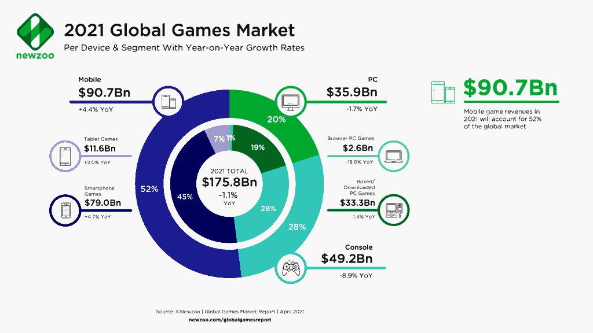

AnimeShooter Blog10/08/2021
~ Ferib Hellscream
The Business Model of AnimeShooter
Developing a video game is one thing, making money out of it is a whole different thing. The gaming industry is big business, generating over $177 billion in 2020 according to Newzoo. But the real question is, how much does game development cost? What does it cost to update and maintain a game? And much money will be left over as profit?

Honestly, I have no fucking clue. I am just ripping off an existing game and making a private game server in my mom's basement. Since my time has no value, developing the game server is nearly free. The only cost I have is a €4/month Linux server to host my game server and a €0.99/year (tax excl.) for the domain name, thanks to a promotion. I assume the .com domain promotion is a one-time thing, next year I expect them to charge me the full 12-ish euro.
How much do you pay??
But yes, you heard that correctly. I only pay €3.99 (tax inc.) a month for a basic Linux VPS. And (soon) another €11.99 annually for the AnimeShooter.com domain.
It is no coincidence that the price is this low as my main focus was to use non-commercial solutions. The following technologies were used:
Since all of the above technologies are open-source and are free of charge, I do not have to pay any additional money other than renting physical hardware that will be used for hosting my Linux OS. My Virtual Private Server (VPS) is part of one big dedicate computer. These big computers have dedicated hardware that is used to split its resources into multiple virtual instances, allowing host providers to create custom Virtual Private Servers which they can then rent to customers like me.
Is it powerful enough?
Depends, as of right now I do not expect many players on my server, or at least not at the same time. Let's not forget that the original game used to be peer-to-peer, meaning that the real bandwidth usage does not come from game rooms, but from players logging into the game lobbies while looking for matchmaking.
Since peer-to-peer games are very insecure from a cheating perspective, I do not plan on copying that behavior. Instead, I will create a client-to-server game room, where the server relays the traffic sent by the game client. Additionally, I will add some optional server-side computations to verify if the client is sending legitimate data. For example, my server will keep track of objects server-side to prevent teleporting, speed hacking, and other game-breaking exploitations.
With that being said I doubt my €4/month Linux VPS will be able to handle all of this, but only time will tell us how it works out. The game servers are capable to perform horizontal scaling, so I am looking forward to putting that to use.
Where does the money come from?
Right now, it's all coming from my own pocket. I do plan on adding some kind of webshop where people can donate money to the project and obtain cosmetic in-game items. Making the game a pay-to-win is not something I want to do as I aim at a very low-cost expense combined with the fact that this is an educational hobby project for me.
For those who want to donate money already, you can check out my GitHub profile, having around 3 people donating me $2/month should keep the game servers alive.
Monetizing our platform
Unfortunately, we do have to make money one way another, this will be done both passively with ads and through in-game purchases. I know how annoying ads are and how pay-to-win ruins the gameplay, but I will do my very best to reduce this as much as possible.
The truth is that any organization needs money to make progress, including AnimeShooter. These earning will be spent on art, hosting, and some other stuff I may need to improve the AnimeShooter.
What happens if no one donates?
Worst case scenario, I end up paying 48 euro (12x €4/month) a year for the server and 12 euro for the domain name, giving me a total cost of only 60 euro each year. Continuing like that for the next 5 years will only lose me 300 euros for a project that has high potentials and lots of educational resources. So hopefully you learned something along the way ;)
Conclusion
With that being said, I hope my 'business model' is clear to all of you. I am not here to empty your pockets, instead, I am here to tease your brain and hopefully learn you a thing or two in an interactive project!